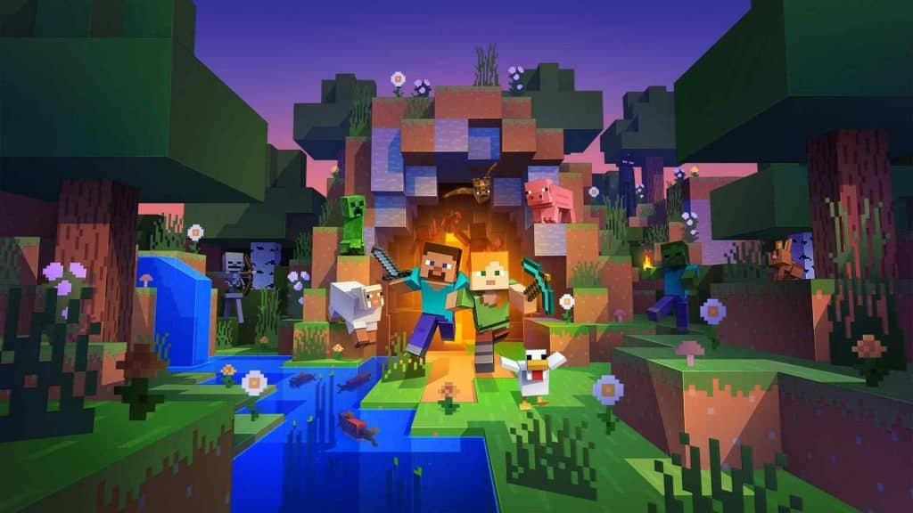
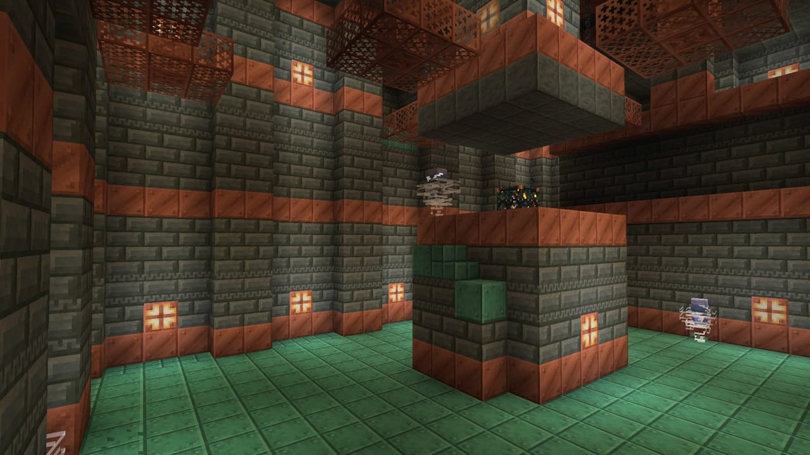

Legado Marcado
O sucesso do Minecraft é um exemplo claro do potencial dos jogos sandbox como ferramentas de
infinitas possibilidades. Os jogadores podem construir cidades, réplicas de locais famosos,
criar jogos dentro do próprio jogo, explorar vastas paisagens geradas proceduralmente e muito mais

Minecraft está Vivo
Desde sua primeira aparição em 2009 já era um fenômeno com um modelo de compra incomum no qual usuários adquiriam o
jogo inacabado teriam direito a todas as atualizações futuras, fator imprescindível para que se tornasse um dos
jogos mais vendidos do mundo. O jogo continua atualizando tendo varias novidades até o tempo atual,
com novas estruturas e atualizando as antigas mecânicas.

Houve muitos avanços desde o seu lançamento, tais quais ajudaram para que o jogo se mantesse de pé.
Isso inclui as atualizações na dimensão do Nether e The End, sendo a segunda a dimensão que te leva
ao "fim" do jogo após derrotar o dragão visto na imagem abaixo. E o objetivo de muitos jogadores
após iniciar o mundo é justamente se fortalecer com armaduras e completar esse objetivo